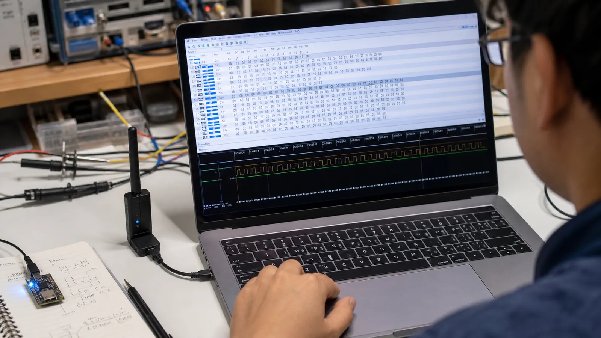

دیدن رشتهای از بایتها در Sniffer ابتدا ترسناک است. با شکستن پکت به چند بخش ثابت و سپس تفسیر Header و Payload، همان داده خام به یک پیام قابل فهم تبدیل میشود. این مهارت پایه دیباگ همه مراحل بعدی است.
پکت روی هوا با Preamble آغاز میشود تا گیرنده زمانبندی بیت را هماهنگ کند. Access Address مشخص میکند بسته متعلق به Advertising اولیه یا یک اتصال خاص است. پس از آن PDU شامل Header و Payload میآید و CRC خطاهای انتقال را آشکار میکند. طول دقیق بعضی بخشها به PHY و نوع PDU وابسته است.
در کانال Advertising، بیتهای Header نوع PDU، اطلاعات آدرس و طول Payload را مشخص میکنند. در کانال داده، Header موضوعاتی مانند شناسه کانال منطقی، شماره توالی و وجود داده بیشتر را حمل میکند. همیشه نوع کانال و نوع PDU را قبل از معنیکردن بایتهای بعدی مشخص کنید.
Payload ممکن است آدرس فرستنده، ساختارهای AD، داده ATT یا کنترل Link Layer باشد. ترتیب بایت در بسیاری از فیلدهای چندبایتی Little Endian است؛ یعنی کمارزشترین بایت زودتر دیده میشود. Sniffer خوب فیلدها را باز میکند، اما توانایی بررسی دستی برای کشف خطای طول، اندینبودن یا UUID ضروری است.
در تبادل متصل، بستههای دو طرف با فاصله کوتاه ثابت Inter Frame Space از هم جدا میشوند و شماره توالی جلوی تحویل تکراری داده را میگیرد. اگر پاسخ بهموقع نرسد، ارسال در Connection Event بعدی تکرار میشود. نمودار زمان به شما میگوید مشکل از داده است یا از زمانبندی رادیو.
در یک Advertising ابتدا نوع PDU و Length را از Header بخوانید. سپس آدرس 6 بایتی را جدا کنید. باقی Payload را به بلوکهای «Length، Type، Data» بشکنید. مثلاً Type برابر 0x09 نام کامل محلی و Type برابر 0xFF داده سازنده را نشان میدهد.